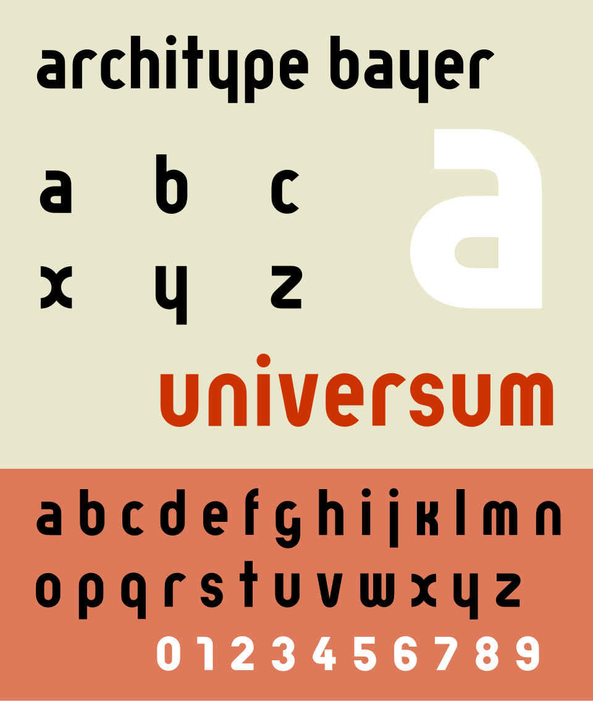
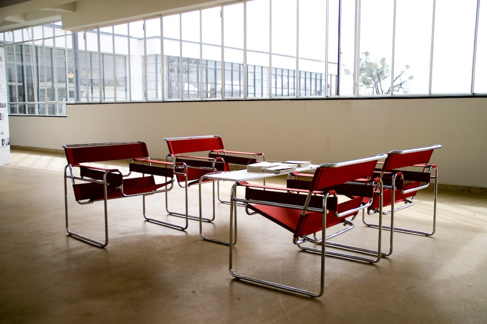
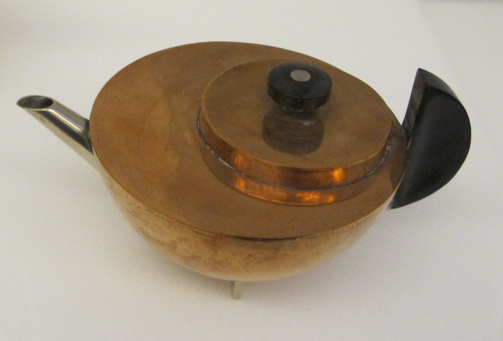
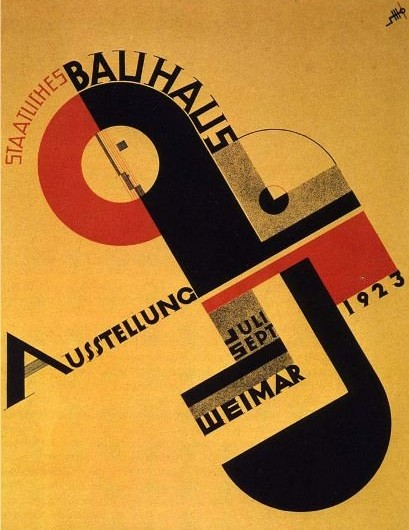
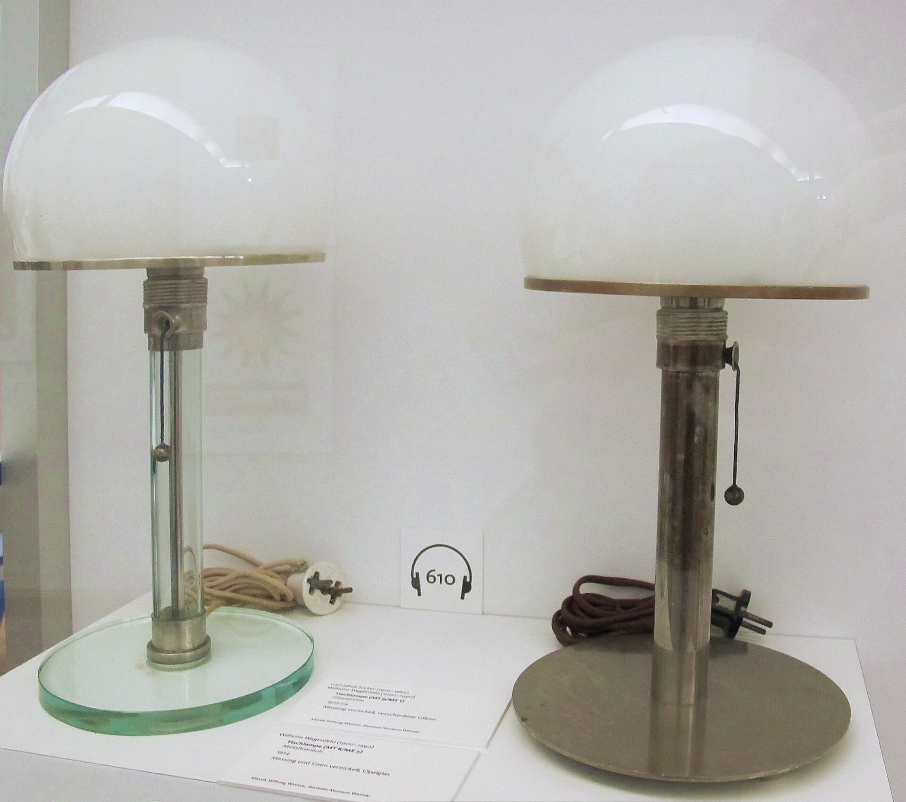

Introduction — Unifying Art and Technology
If Art Nouveau wanted to beautify the industrial world through organic forms, the Bauhaus wanted to reshape it entirely by unifying art, craft, and technology. The Bauhaus — literally “house of building” in German — was not primarily an architectural movement, though it produced extraordinary buildings. It was a school, a method, a philosophy, and eventually a diaspora that fundamentally altered how design is taught and practiced across the globe. From 1919 to 1933, it generated ideas that remain at the heart of modern design education, industrial design, graphic design, typography, and architecture. In barely fourteen years, the Bauhaus solved problems that continue to preoccupy designers today: How can good design be made affordable and accessible? How do you educate designers to think across disciplines? How do you merge art and technology without sacrificing either?
The Bauhaus was revolutionary, but it was also practical. Its students learned by making. Its teachers were both artists and craftspeople. Its workshops produced actual objects for sale. And because it operated in Weimar Germany during a time of profound political and economic upheaval, it was perpetually embattled. The school faced constant criticism from both left and right — dismissed as “un-German,” “degenerate,” “Bolshevik.” It was closed by the Nazis in 1933, scattered, and reinvented in America. Yet its influence only grew.

Part 1 — Historical Context: Weimar, War, and Revolution
The Bauhaus was born from catastrophe. Germany in 1919 was a nation in shock. The First World War had killed nearly two million German soldiers and civilians. The Kaiser had abdicated. A revolution in November 1918 had briefly threatened to establish a communist government. The new Weimar Republic, founded in 1919, was fragile and contested from the start — despised by conservative monarchists on one side and radical communists on the other. Economic chaos followed: hyperinflation devastated the middle class in 1923. The sense of civilizational breakdown was profound and pervasive.
In this moment of rupture, a group of architects and artists gathered in Weimar, a city with deep cultural associations but peripheral to Germany’s industrial centers. They asked a radical question: Could education reform contribute to social and political renewal? Could a new kind of design school help heal a broken society? Could the machine — that symbol of industrial modernity that had devastated the countryside at the Western Front — become an instrument of human flourishing rather than destruction?
The Bauhaus emerged directly from an earlier institution: the Kunstgewerbeschule (School of Arts and Crafts) in Weimar, which had been reorganized by Henry van de Velde, the Art Nouveau master who had himself concluded that the future lay not in retreating from industry but in transforming it. When van de Velde retired in 1915, his students and colleagues — including Walter Gropius, a young architect already experimenting with industrial production — imagined something entirely new. In 1919, the Kunstgewerbeschule and a nearby academy of fine art were merged. Walter Gropius was appointed director, and he renamed the combined school the Staatliches Bauhaus — the State Bauhaus.
Gropius’s 1919 manifesto announced the school’s founding vision. It declared that art and technology, previously separated, must be reunited. “Kunst und Technik — eine neue Einheit,” the manifesto proclaimed: “Art and Technology — a new unity.” The manifesto rejected both the romantic Arts and Crafts retreat into handcraft and the soulless machine aesthetics of industrial production. Instead, it proposed a third path: disciplined collaboration between artist and artisan, between inspired invention and practical utility, between beauty and function.
Part 2 — The Three Phases: Weimar, Dessau, Berlin
The Weimar Period (1919–1925)
The Bauhaus’s first years were turbulent and visionary. Gropius assembled an extraordinary faculty that included painters like Paul Klee and Wassily Kandinsky, both refugees from the Russian Revolution; sculptors like Oskar Schlemmer; the textile designer Anni Albers; and experienced craftspeople. What united this diverse group was a commitment to educating designers, not primarily through lectures on history or theory, but through immersion in materials and processes.
The heart of the Bauhaus curriculum was the Vorkurs, or preliminary course. This six-week intensive, created by Johannes Itten, became the most influential design pedagogy of the twentieth century. In the Vorkurs, students did not study design history or perspective drawing. Instead, they explored materials — paper, wood, metal, fabric — through direct experimentation. They learned about form, space, color, and composition by making, testing, and failing. Itten, a mystic who combined modernist abstraction with an interest in Eastern philosophy, brought a spiritual dimension to this practical work. He believed that by understanding materials and forms at their essence, students would develop an intuitive sense of design that transcended style or fashion.
The Bauhaus was organized around workshops: carpentry, metalwork, weaving, pottery, typography, graphic design, theater. Unlike traditional art schools where students spent years mastering a single craft, Bauhaus students rotated through multiple workshops, learning to think like generalists. Each workshop was headed by both an artist (a “form master”) and a craftsperson (a “craft master”). The theoretical contributions of modernist painting and sculpture — abstraction, geometric form, primary colors — flowed directly into the design of functional objects.
During the Weimar years, the Bauhaus maintained a complex relationship to expressionism and mysticism. Klee’s teaching emphasized the intuitive exploration of form. Kandinsky lectured on the emotional properties of color and shape. There was a spiritual, almost utopian quality to the enterprise — a belief that through design education, human consciousness itself could be transformed. At the same time, the workshops produced remarkably functional, practical objects: chairs, lamps, textiles, pottery.
The Dessau Period (1925–1932)
In 1924, the Bauhaus faced a political crisis. The Weimar government, now controlled by conservatives, withdrew its support. The school relocated to Dessau, an industrial city in eastern Germany. This move proved transformative. In Dessau, Gropius designed a new Bauhaus building — completed in 1926 — that became one of the most iconic modernist structures ever built. A geometric composition of glass, steel, and concrete, with workshop wings connected by a transparent bridge, the building itself was a manifesto: technology and beauty unified, function expressed as form, industrial materials celebrated rather than hidden.
Under the directorship of László Moholy-Nagy (1923–1928), the Bauhaus shifted decisively away from Itten’s mysticism toward technology and functionalism. Moholy-Nagy, a Hungarian artist fascinated by photography, film, and light, brought a more rationalist philosophy. The curriculum became more systematic, the workshops more production-oriented. The school began to emphasize standardization, mass production, and the industrial application of design principles. Marcel Breuer, a former Bauhaus student who became a master at age twenty-five, created his iconic Wassily Chair (also called the B3 chair, 1925) using tubular steel — a material that had previously been used only for bicycles and furniture frames. The chair became a symbol of Bauhaus innovation: modern, functional, producible in quantity, and aesthetically powerful.
Typography and graphic design gained prominence in the Dessau years. Herbert Bayer, a student who became a master, pioneered a radical new approach to design. He rejected decorative fonts and ornamental borders. Instead, he worked with sans-serif typefaces (particularly Eric Gill’s Gill Sans), asymmetrical compositions, and bold geometric layouts. His posters and advertisements — including the famous Bauhaus exhibition poster designs — established visual principles that still govern contemporary graphic design. Bayer’s approach rejected the idea that symmetry was inherently beautiful; instead, balance could be achieved through asymmetric relationships of form, space, and color.
Hannes Meyer, a Swiss architect and communist sympathizer, became director in 1928. Under Meyer, the Bauhaus became even more socially conscious and production-focused. Meyer pushed the school toward industrial collaboration and away from pure artistic experimentation. His motto was “the people’s needs before the artist’s ego.” This ideological shift, combined with the school’s growing political visibility, intensified conservative opposition. The Dessau city council began to restrict the school’s budget and autonomy. Meyer himself was dismissed in 1930, accused of communist sympathies.
The Berlin Period (1932–1933)
Mies van der Rohe took over as director in 1930, the school’s third and final leader. An architect and designer of extraordinary refinement, Mies pushed the Bauhaus toward even greater sophistication. He reorganized the curriculum, emphasizing architectural thinking and design fundamentals. His own work — spare, elegant, devoted to revealing the essential nature of materials — influenced the entire school. But Mies inherited an institution under siege.
The Nazis, who had gained parliamentary power in 1930 and become increasingly dominant, viewed the Bauhaus with unrelenting hostility. The school’s international character, its embrace of modernism, its left-wing associations, its inclusion of Jewish staff members — all of this violated Nazi ideology. In April 1933, soon after Hitler came to power, the Gestapo raided the school’s Berlin location. On July 20, 1933, Mies announced that the Bauhaus would close. The school had survived fourteen years. Its work in that time would reshape the entire twentieth century.
Part 3 — Defining Principles: The Bauhaus Philosophy
Form follows function — the principle articulated by the architect Louis Sullivan decades earlier — became a Bauhaus mantra. But at the Bauhaus, function meant more than mere utility. It meant that beauty should emerge from a profound understanding of purpose, materials, and processes. The Wassily Chair is functional not because it holds a body (many chairs do that), but because its tubular steel structure reveals how a chair works: the frame bears the load, the canvas surfaces suspend weight. Every element has a reason. Nothing is superfluous.
Examples in practice: The Wassily Chair (B3) has no decorative cross-bars or carved details — every tube performs a structural role. Marianne Brandt’s MT 49 Tea Infuser is a perforated sphere on a slender rod: shape, material, and function are inseparable. The Dessau Building’s all-glass workshop wing makes the interior activity legible from the street, the architecture itself enacting the school’s commitment to transparency.
The unity of art and technology was not seen as a compromise but as an evolution. The Bauhaus rejected the dichotomy between fine art and craft that had plagued European culture for centuries. An artist like Paul Klee was not too pure to design textiles or think about industrial production. The same principle applied to students: a painter might spend time in the metal workshop; a furniture designer would study color theory with Kandinsky. This cross-pollination produced designers who thought systematically about how forms, materials, colors, and functions relate.
Examples in practice: Anni Albers studied color theory with Josef Albers and applied systematic color sequences directly to her weavings — their visual depth derived from principle, not decoration. Marcel Breuer’s furniture translates Kandinsky’s geometric abstraction into three dimensions: the Wassily Chair’s intersecting planes echo Constructivist composition. Marianne Brandt’s metalwork — spheres, cylinders, flat discs — are the vocabulary of abstract painting transposed into functional objects.
The Vorkurs remained central throughout the Bauhaus’s history, evolving under different masters but maintaining its commitment to direct, experiential learning. Students began by understanding materials in their raw state — the plasticity of clay, the grain of wood, the rigidity of metal — before applying those insights to design. This pedagogical commitment meant that Bauhaus designers, unlike many of their contemporaries, had genuine knowledge of craft. They understood what could and could not be done with given materials.
Examples in practice: Josef Albers, who ran the Vorkurs from 1923, required students to construct three-dimensional forms from a single flat sheet of paper — no cutting, only folding and scoring — forcing them to discover structural potential within a flat material. Another standard exercise asked students to arrange material samples (rough/smooth, heavy/light, warm/cold) entirely by touch, before drawing or designing anything. These exercises built design intuition from the ground up rather than from historical precedent.
Design for mass production was not viewed as a corruption of craft but as its ultimate purpose. If a chair or lamp could be made beautifully and sold affordably, that was a triumph, not a compromise. This egalitarian commitment — the belief that good design should be accessible to everyone, not just the wealthy — distinguished the Bauhaus from earlier movements. It was democratic in aspiration, though often aristocratic in execution (Bauhaus objects were still expensive during the school’s existence).
Examples in practice: The WG 24 Table Lamp (Wagenfeld and Jucker, 1924) was among the first Bauhaus workshop products licensed to a commercial manufacturer — Schwintzer & Gräff — proving that the school could bridge design idealism and market reality. From 1929, Bauhaus wallpaper patterns produced in collaboration with the Rasch Brothers company brought geometric modernist design to working-class homes at accessible prices. The Wassily Chair was eventually mass-produced by Thonet, the same firm that had industrialized bentwood furniture a generation earlier.
Typography became a discipline of extraordinary rigor. The Bauhaus rejected historicist typefaces and decorative ornament. Sans-serif fonts — modern, geometric, without unnecessary flourish — became the standard. Asymmetric layouts replaced the centered, symmetrical compositions that had dominated printed design for centuries. Photographs, when used, were often cropped or combined dynamically rather than presented as isolated illustrations. These innovations in graphic design, pioneered largely by Herbert Bayer and Joost Schmidt, created a visual language that still feels contemporary.
Examples in practice: Joost Schmidt’s 1923 Bauhaus Exhibition poster used only primary colors and geometric circles and lines to create a dynamic visual hierarchy — no decorative border, no ornamental flourish. Bayer’s proposed lowercase-only alphabet (1925) was itself a design argument: capital letters, he contended, were a social convention without phonetic justification, an ornament embedded in the writing system itself. Even the school’s own stationery and course catalogs served as live demonstrations of asymmetric typographic principles in everyday use.
Part 4 — Key Figures: The Masters
Walter Gropius (1883–1969) — Founder
Gropius was the visionary who conceived the Bauhaus and held it together through constant crisis. A trained architect with experience in industrial production (he had worked under Peter Behrens, a pioneer of modern industrial design), Gropius understood both the artistic and practical dimensions of design. His 1919 manifesto articulated the Bauhaus philosophy: the reunification of art and technology through education. Though Gropius himself did not teach extensively at the school, his leadership, his design projects (including the iconic Dessau building), and his tireless advocacy for the Bauhaus’s mission made him the movement’s public face. After emigrating to America in 1937, he continued to spread Bauhaus principles through his teaching at Harvard and his architectural practice.
Ludwig Mies van der Rohe (1886–1969) — “Less Is More”
Mies embodied the Bauhaus principle that beauty emerges from clarity and economy. His buildings, furniture, and design philosophy were devoted to revealing the essential nature of materials and structure. His Barcelona Chair (1929), designed for the German Pavilion at the Barcelona Exposition, stripped seating to its formal essence: a steel frame and leather planes, nothing more. His later architecture — the Farnsworth House, the Barcelona Pavilion — demonstrated that modernist abstraction and spatial elegance could achieve profound beauty through systematic reduction. As the Bauhaus’s final director, Mies attempted to preserve the school’s integrity even as Nazi pressure mounted. After emigrating to America, he became one of the most influential architects of the twentieth century.
László Moholy-Nagy (1895–1946) — Light and Technology
A Hungarian artist fascinated by light, photography, film, and kinetic art, Moholy-Nagy brought technological sophistication and rationalist philosophy to the Bauhaus during his years as director of the metal workshop and later as co-director. His experimental work with light — kinetic sculptures, photographic experiments, film — showed that modernist abstraction could engage with technology in ways that were both intellectually rigorous and aesthetically moving. After emigrating to America in 1937, he founded the New Bauhaus in Chicago (later the Institute of Design at IIT), ensuring that Bauhaus pedagogy took root in American design education.
Marcel Breuer (1902–1981) — Furniture and Structure
Breuer was the first student to become a master, a trajectory that demonstrated the Bauhaus’s commitment to nurturing young talent. His tubular steel furniture — the Wassily Chair, the Cesca Chair (B32, 1928) — revolutionized how chairs could be made. By recognizing that bicycle tubing could be bent and welded into chair frames, Breuer liberated furniture design from heavy wooden construction. His later architectural work, including housing projects that applied Bauhaus principles to affordable residential design, showed how modernist principles could serve social goals. Like many Bauhaus masters, Breuer emigrated to America and profoundly influenced postwar American architecture and design.
Paul Klee (1879–1940) — Painting and Form
Klee was the most poetic of the Bauhaus masters. His teaching on color, line, and form combined rigorous analysis with a deeply personal, almost musical sensibility. His own paintings — geometric yet fantastical, disciplined yet expressive — demonstrated that modernism need not sacrifice emotion or imagination. His influence on Bauhaus thinking about abstraction was immense. Though Klee was not primarily a designer of functional objects, his insistence that form could be understood as a language, with its own grammar and poetry, shaped how Bauhaus students approached design problems.
Wassily Kandinsky (1866–1944) — Abstraction
Kandinsky arrived at the Bauhaus in 1922 as an elder statesman of abstraction. His theoretical work, particularly his 1911 book Concerning the Spiritual in Art, provided intellectual foundations for modernist abstraction. At the Bauhaus, he taught theory courses that connected color and form to emotional and spiritual states. Like Klee, Kandinsky brought a sense of purpose and depth to abstraction, insisting that modernist forms were not arbitrary but expressive and meaningful.
Josef and Anni Albers — Color and Textiles
Josef Albers, who arrived as a student and became a master, pioneered the systematic study of color through his courses and his own artistic practice. His color interaction experiments — studies showing how colors shift in appearance depending on their context and surrounding colors — influenced design and art education globally. His wife, Anni Albers, became the director of the weaving workshop, one of the most successful and prestigious departments at the Bauhaus. Her work demonstrated that textile design could achieve the same level of intellectual rigor and formal innovation as painting or architecture. After emigrating to America, both Albers became influential teachers; Josef taught at Black Mountain College and then Yale, where his color theory courses attracted artists and designers worldwide.
Herbert Bayer (1900–1985) — Graphic Design
Bayer began as a student in the printing workshop and became a master while still in his twenties. His work — posters, typography, advertising, exhibition design — established visual principles that governed modernist graphic design for decades. His rejection of decoration, his asymmetric compositions, his integration of photography and typography, and his pioneering work with sans-serif fonts created a new visual language. The Universal typeface he designed (1925), though not released until decades later, embodied Bauhaus principles: geometric clarity, functionalism, and democratic accessibility.

Other Essential Figures
Marianne Brandt (1893–1983) was a pioneering metalworker who designed some of the Bauhaus’s most iconic products: the Kandem lamp, tea infusers, and tableware that merged sculptural form with industrial production. Her work proved that metalwork could be both artistically ambitious and mass-producible.
Gunta Stölzl (1897–1983) was one of only a handful of women to achieve the rank of Bauhaus master, leading the weaving workshop with innovation and rigor. Her textiles combined traditional craft knowledge with modernist abstract forms, and she reorganized the workshop to balance artistic experiment with commercial production.
Johannes Itten (1888–1967) created the Vorkurs, the most influential design pedagogy of the modern era. Though he left the Bauhaus in 1923, his curriculum structure and emphasis on direct material exploration remained central to the school’s teaching throughout its existence. His later theoretical writings on color and design continue to influence art and design education.
Oskar Schlemmer (1888–1943) directed the theater workshop, where experimental approaches to costume, movement, and stage space explored how modernist abstraction could engage the human body and performance.
Part 5 — Landmark Works and Objects
The Bauhaus Dessau Building (1925–1926, Walter Gropius) remains the most important Bauhaus structure: a composition of glass, steel, and concrete that expresses the school’s principles through architecture. Every element has a function; beauty emerges from the honest expression of structure and materials. The building’s transparency — glass walls revealing the workshops — symbolized the Bauhaus commitment to openness and integration.
The Wassily Chair (B3) (1925, Marcel Breuer) revolutionized furniture design by using tubular steel, a material previously associated only with bicycles and industrial equipment. The chair’s purity — a steel frame with canvas stretched between the elements — demonstrates that beauty can emerge from absolute clarity of structure and material.

The Barcelona Chair (1929, Ludwig Mies van der Rohe) achieves elegance through reduction: a steel frame and leather planes, nothing extraneous. It remains perhaps the quintessential expression of Bauhaus refinement.
Marianne Brandt’s Tea Infuser and Kandem Lamp (1924–1925) demonstrated that metalwork could achieve modernist abstraction while remaining functional. The tea infuser — a geometric silver sphere punctuated by a single opening — is a masterpiece of form and utility.

Herbert Bayer’s Exhibition Posters (1920s–1930s) established a new visual language for graphic design: asymmetric composition, bold sans-serif typography, dynamic use of photographic imagery, and geometric forms. The 1923 Bauhaus Exhibition poster by Joost Schmidt — concentric circles, diagonal lines, primary colors, no decorative border — remains among the most cited examples of this approach.

Wilhelm Wagenfeld’s WG 24 Table Lamp (1924) combined a blown glass globe with a tubular metal base in a composition of perfect simplicity. Its continued production (and imitation) demonstrates the enduring appeal of Bauhaus design principles.

Anni Albers’s Textiles (1920s–1930s) merged traditional weaving techniques with modernist abstract forms, proving that textiles could be intellectually and aesthetically sophisticated.
Part 6 — Gender and the Bauhaus
The Bauhaus proclaimed ideals of equality and democratic access to design education. Yet like most early twentieth-century educational institutions, it fell far short of these ideals when it came to gender.
Women were actively recruited to the Bauhaus — the preliminary course attracted many female students — but they faced systematic steering toward certain workshops, particularly weaving. Even though weaving was one of the school’s most innovative and commercially successful departments, it was coded as feminine and thus lower in prestige than furniture or architecture. Many women pursued careers in graphic design and typography, areas where they achieved genuine prominence.
Despite these institutional barriers, several women achieved recognition as Bauhaus masters. Anni Albers became director of the weaving workshop and, through her theoretical work on color and structure, profoundly influenced modernist art and design education. Gunta Stölzl, as the only female master in the weaving workshop, had to fight for both artistic respect and fair compensation. Marianne Brandt overcame prejudice to become a master metalworker whose industrial designs achieved commercial success.
The gap between the Bauhaus’s egalitarian rhetoric and its gendered reality reflects broader tensions in modernism: the belief in rationality and universal principles coexisted with deeply ingrained social hierarchies. Examining this contradiction has become essential to contemporary understanding of the Bauhaus’s legacy.
Part 7 — Closure and Diaspora
The Bauhaus was closed not by internal failure but by political catastrophe. The Nazi regime viewed modernism as degenerate and un-German. The school’s international character, its association with leftist politics, the presence of Jewish faculty members, and its aesthetic principles — all of this violated Nazi ideology. After Hitler came to power in January 1933, the school’s fate was sealed.
But closure in Berlin did not mean the end of the Bauhaus. Instead, it meant diaspora. The school’s dispersal turned out to be the means of its greatest influence.
Walter Gropius emigrated to England in 1934, then to the United States in 1937, where he joined the faculty of Harvard University. There, he established the Graduate School of Design and continued to teach Bauhaus principles to American architects and designers for nearly three decades. His students and colleagues carried Bauhaus thinking throughout American architecture.
Marcel Breuer followed Gropius to Harvard and became one of the most important architects of the postwar period, designing institutional and residential buildings that applied Bauhaus principles to American contexts.
László Moholy-Nagy, after brief periods in London and Amsterdam, settled in Chicago in 1937 and founded the New Bauhaus (later the Institute of Design at the Illinois Institute of Technology). This school became the primary institution for transmitting Bauhaus pedagogy to American designers.
Ludwig Mies van der Rohe emigrated to the United States in 1938 and took a position at the Armour Institute of Technology (now IIT). There, he established a school of architecture that, in many respects, embodied Bauhaus principles even more rigorously than the school’s final years in Berlin. His teaching, combined with his architectural practice, made him one of the most influential figures in twentieth-century design.
Josef and Anni Albers emigrated to the United States in 1933. Josef taught at Black Mountain College in North Carolina, where he profoundly influenced artists and designers through his systematic color theory teaching. Later, at Yale, his courses on color interaction became legendary, attracting students who would shape American art and design for decades.
This diaspora was tragic — it was flight from persecution, the loss of a vital educational institution. Yet it also meant that Bauhaus principles were embedded in American universities and design schools at the moment when the United States was becoming the world’s economic and cultural superpower. The irony is profound: the Nazi destruction of the Bauhaus in Germany ensured its global triumph.
Part 8 — Legacy: Why the Bauhaus Matters
More than ninety years after its closure, the Bauhaus remains the most influential design school in history. Its impact extends across architecture, graphic design, industrial design, furniture design, typography, textile design, and art education.
The Bauhaus’s pedagogical approach — beginning with direct material exploration, progressing through systematic study of form and color, applying those principles to functional objects, emphasizing cross-disciplinary thinking — became the standard model for design education worldwide. Almost every design school today, whether explicitly or implicitly, teaches using some variant of the Vorkurs. The commitment to learning by making, to understanding materials through direct engagement, to seeing design as problem-solving rather than decoration — all of this comes from the Bauhaus.
Bauhaus principles shaped the development of modernist architecture, the International Style, and contemporary design practice. The idea that form should follow function, that ornament should be earned rather than applied, that industrial production should be celebrated rather than hidden — these are now conventional wisdom in design. But they were revolutionary a century ago.
In industrial design, the Bauhaus established the principle that everyday objects — chairs, lamps, tableware, appliances — deserve serious aesthetic attention. A bentwood chair is not merely functional; it is an expression of clear thinking about materials, structure, and use. This principle is embodied in companies like IKEA, which, though not explicitly Bauhaus, applies its core belief: that good design should be affordable and accessible to everyone.
In graphic design and typography, the Bauhaus legacy is visible everywhere. The sans-serif typefaces that dominate contemporary design (from Helvetica to the typography of Apple products) descend directly from Bauhaus pioneers like Herbert Bayer. The asymmetric compositions, the integration of photography and typography, the rejection of decorative excess — these are now default approaches in contemporary graphic design.
Yet the Bauhaus legacy is also contested. Some critics argue that the school’s emphasis on rationality and functionalism created a certain sterility, a loss of ornament and diversity that impoverishes design. Postmodernism in the 1970s and 1980s explicitly rejected Bauhaus principles as narrow and authoritarian. Contemporary designers often embrace decoration, historical reference, and irony — positions that would have seemed heretical to Bauhaus masters.
There are also legitimate critiques of the Bauhaus as an instrument of modernist cultural imperialism. The school’s principles were presented as universal and rational, yet they emerged from specific European (particularly German) cultural contexts. When exported globally, Bauhaus modernism sometimes displaced local design traditions and aesthetic values. The school’s commitment to abstraction and the reduction of form to essentials, while intellectually rigorous, can seem inhospitable to ornament, narrative, and cultural particularity.
Nevertheless, the Bauhaus endures because its core commitments — that education should be transformative, that design should serve human needs, that beautiful and functional objects should be accessible to everyone, that designers should think systematically across disciplines — remain compelling. Contemporary designers working in sustainability, universal design, and social innovation often find themselves returning to Bauhaus principles, discovering that a school founded nearly a century ago still offers wisdom.
The Bauhaus proved that art and technology need not be enemies. That abstraction and utility can coexist. That craft knowledge and industrial production can be partners. That design education is a fundamental human right, not a luxury for the wealthy. That young people, given rigorous training and genuine materials, can become designers capable of reshaping the world. These lessons, hard-won between 1919 and 1933 in Weimar, Dessau, and Berlin, continue to guide how we teach, practice, and think about design.
Discussion Questions
-
The Bauhaus rejected both the romantic handcraft of the Arts and Crafts movement and the soulless machine aesthetics of industrial production, seeking instead a synthesis. Do you think this synthesis is possible? Can industrial production be genuinely beautiful and meaningful?
-
The Vorkurs, with its emphasis on direct material exploration, remains extraordinarily influential in design education. What do you think makes this approach so enduring? What are its limitations?
-
Bauhaus principles were presented as universal and rational, yet they emerged from a specific cultural context. Is it fair to critique the Bauhaus as a form of cultural imperialism when exported globally? Or are principles like “form follows function” genuinely universal?
-
The Bauhaus faced criticism from both left (communists thought it wasn’t politically radical enough) and right (conservatives called it un-German and degenerate). What does this tell us about where the school positioned itself politically and aesthetically?
-
The Bauhaus believed that good design should be affordable and democratic. Yet Bauhaus-designed objects and furniture were expensive when they were produced. Is the gap between Bauhaus ideals and their material reality a fatal flaw or simply a reflection of economic reality?
-
Compare the Bauhaus approach to design education with how design is taught today. What has changed? What endures? What has been lost?